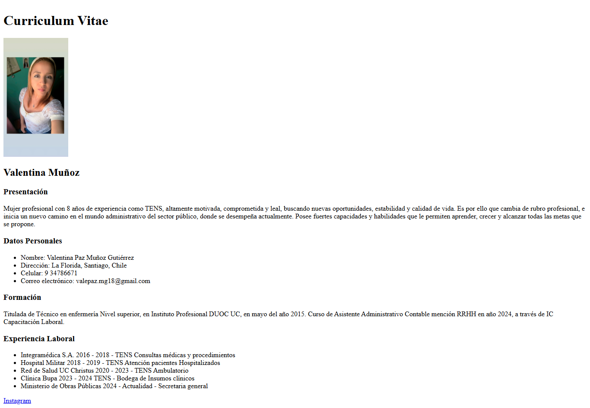
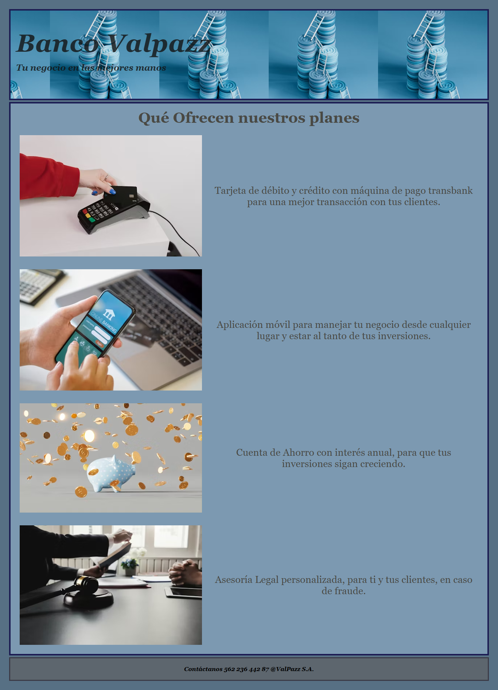
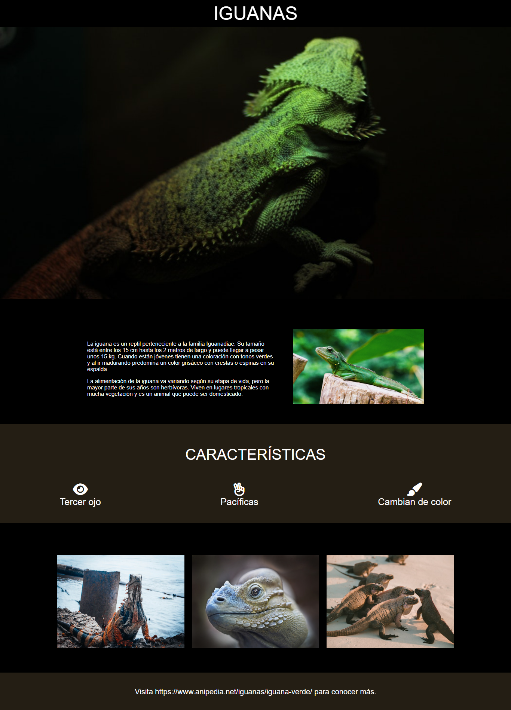

Introducción HTML
Conocimientos básicos de HTML, se crea primera página web de Curriculum Vitae
Visita

Introducción CSS
Conocimientos básicos de CSS, se crea primera página web con diseños de CSS.
Visita

Alineando con Flex
Se aplican contenidos aprendidos, con introducción de Flex y todos sus componentes, principalmente creando grillas.
Visita